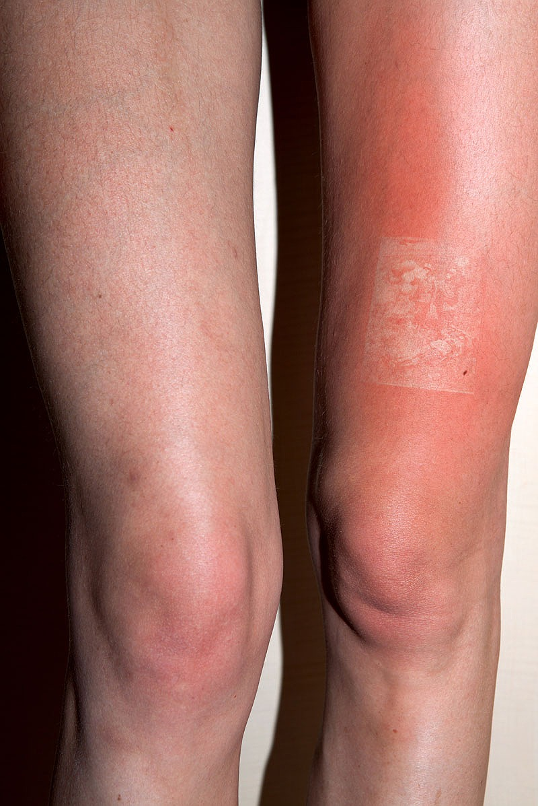
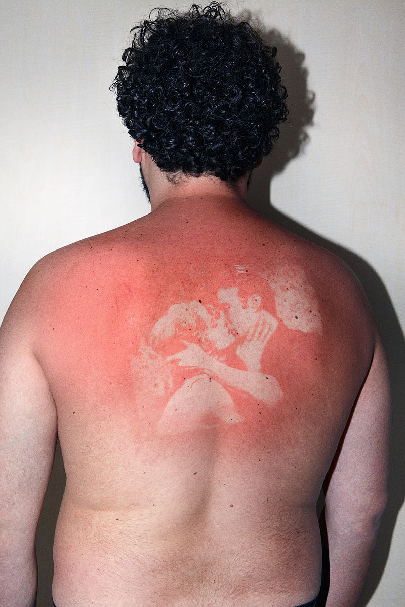

In my research for Infographics, semester 1, 2026, I wrote about Thomas Mailaender's work. This was in reference to a project where I used cyanotypes as my main medium.
Mailaender’s work has long been an inspiration to me, in particular, this series of photographs, which literally burns the negatives onto his subjects’ skin. This work is visceral - you can feel the burn just by looking at these images.I loved the idea of using UV as a processing technique for photography...The tender red of the burns also moves me - the use of a negative to create tone using a single colour feels so delicate.
Mailaender has also worked with cyanotypes extensively, and aside from that I really love his sense of humor and crazy website. I often return to this website when I am feeling stuck in my own work, whether that be to understand a section of his code and rewrite it for my own use, to be exposed to a new strange medium that I could try, or to read through the highly varied content that he works with. For this project, I have heavily referenced his code and website structure, as well as considering the connection between the body and the world (sun etc.) that he explores in his work.
click here to learn more


make space!